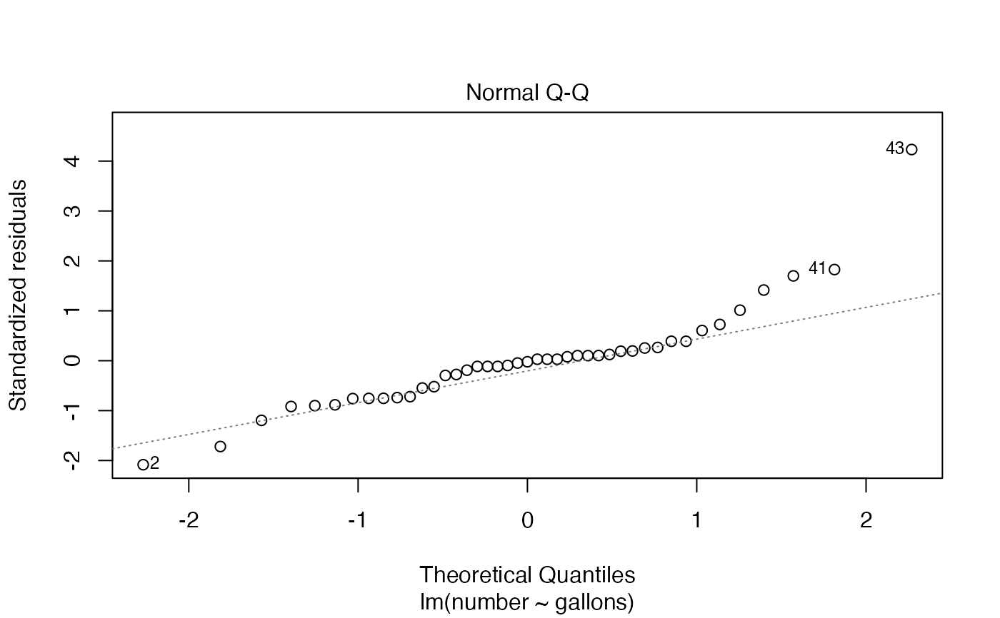

R/BSDA-package.R
Wastewat.RdData for Exercise 9.18
WastewatA data frame/tibble with 44 observations on two variables
injected water (in million gallons)
number of earthqueakes detected in Denver
Davis, J. C. (1986), Statistics and Data Analysis in Geology, 2 ed., John Wiley and Sons, New York, p. 228, and Bardwell, G. E. (1970), Some Statistical Features of the Relationship between Rocky Mountain Arsenal Waste Disposal and Frequency of Earthquakes, Geological Society of America, Engineering Geology Case Histories, 8, 33-337.
Kitchens, L. J. (2003) Basic Statistics and Data Analysis. Pacific Grove, CA: Brooks/Cole, a division of Thomson Learning.
plot(number ~ gallons, data = Wastewat)
model <- lm(number ~ gallons, data = Wastewat)
summary(model)
#>
#> Call:
#> lm(formula = number ~ gallons, data = Wastewat)
#>
#> Residuals:
#> Min 1Q Median 3Q Max
#> -28.881 -8.961 -0.300 3.176 59.151
#>
#> Coefficients:
#> Estimate Std. Error t value Pr(>|t|)
#> (Intercept) 3.5895 3.4834 1.030 0.309
#> gallons 3.7905 0.7843 4.833 1.91e-05 ***
#> ---
#> Signif. codes: 0 ‘***’ 0.001 ‘**’ 0.01 ‘*’ 0.05 ‘.’ 0.1 ‘ ’ 1
#>
#> Residual standard error: 14.33 on 41 degrees of freedom
#> (1 observation deleted due to missingness)
#> Multiple R-squared: 0.363, Adjusted R-squared: 0.3474
#> F-statistic: 23.36 on 1 and 41 DF, p-value: 1.915e-05
#>
anova(model)
#> Analysis of Variance Table
#>
#> Response: number
#> Df Sum Sq Mean Sq F value Pr(>F)
#> gallons 1 4800.2 4800.2 23.36 1.915e-05 ***
#> Residuals 41 8424.9 205.5
#> ---
#> Signif. codes: 0 ‘***’ 0.001 ‘**’ 0.01 ‘*’ 0.05 ‘.’ 0.1 ‘ ’ 1
plot(model, which = 2)
